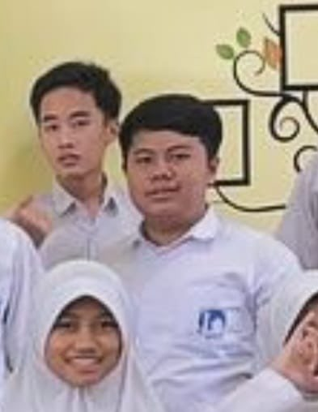
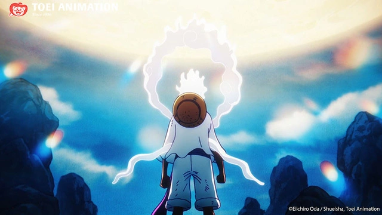
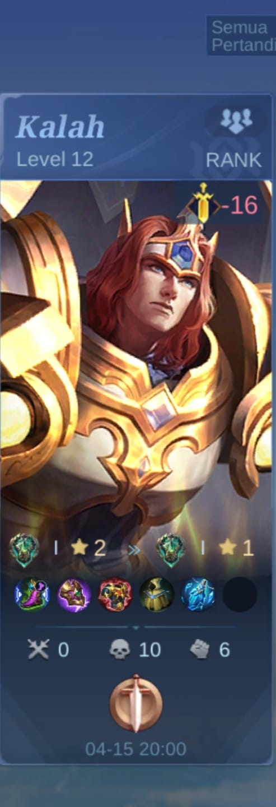
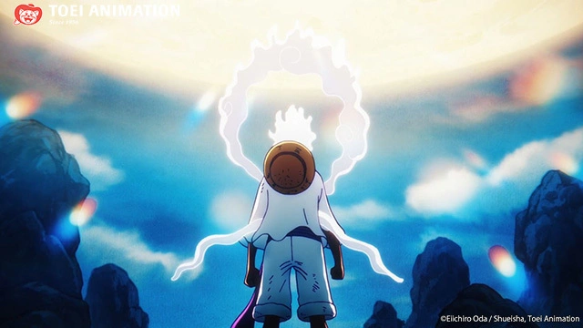
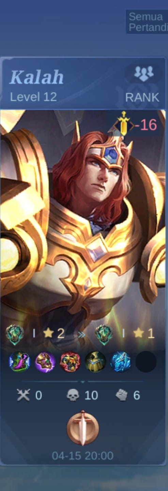

Halo perkenalkan namaku Rio!

Halo, nama saya Rio. Saya adalah seorang siswa kelas 8 SMP di Al Azhar. Saya merasa bangga bisa bersekolah di sana karena selain memiliki lingkungan belajar yang nyaman, sekolah ini juga menawarkan banyak kegiatan ekstrakurikuler yang menarik.
Di waktu luang, saya memiliki hobi bermain game, terutama Mobile Legends. Dari banyaknya hero yang ada, saya paling sering memainkan Tigreal. Saya suka menggunakan Tigreal karena perannya sebagai tank sangat penting dalam tim. Selain itu, kemampuan Tigreal dalam melindungi teman dan mengendalikan musuh membuat saya merasa berperan besar dalam pertandingan. Saya selalu berusaha untuk meningkatkan kemampuan bermain saya agar bisa lebih baik dalam setiap pertandingan.
Selain bermain game, saya juga suka berinteraksi dengan teman-teman di sekolah, berbagi cerita, dan berdiskusi tentang berbagai hal, termasuk strategi bermain Mobile Legends. Saya berharap bisa terus mengasah kemampuan saya, baik dalam belajar maupun bermain game, sehingga dapat meraih prestasi di keduanya.
 


